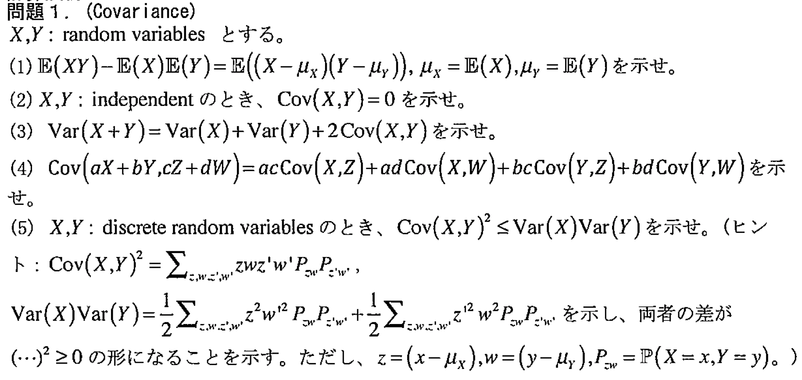

解答
1
$$
\begin{aligned}
\mathbb{E}\left(\left(X-\mu_X\right)\left(Y-\mu_Y\right)\right)
&= \mathbb{E}\left(XY - \mu_YX-\mu_XY + \mu_X\mu_Y\right)\\
&= \mathbb{E}\left(XY\right) - \mu_Y\mathbb{E}(X) - \mu_X\mathbb{E}(Y) + \mu_X\mu_Y\\
&= \mathbb{E}(XY) - \mathbb{E}(X)\mathbb{E}(Y)\quad (\because\mu_X=\mathbb{E}(X),\mu_Y=\mathbb{E}(Y))
\end{aligned}
$$
2
連続型確率変数の場合で証明する。（離散型は \(\int\rightarrow\sum\)）
$$
\begin{aligned}
\mathbb{E}(XY)
&= \int_{x}\int_{y} xy\mathbb{P}(X=x,Y=y)dxdy\\
&= \int_{x}\int_{y} xy\mathbb{P}(X=x)\mathbb{P}(Y=y)dxdy\quad(\because X,Y: \text{independent})\\
&= \int_{x} x\mathbb{P}(X=x)dx\int_{y}y\mathbb{P}(Y=y)dy\\
&= \mathbb{E}(X)\mathbb{E}(Y)
\end{aligned}
$$
となるので、\((1)\) より、
$$
\begin{aligned}
\mathrm{Cov}(X,Y)
&= \mathbb{E}\left(\left(X-\mu_X\right)\left(Y-\mu_Y\right)\right)\\
&=\mathbb{E}(XY) - \mathbb{E}(X)\mathbb{E}(Y)\\
&=0
\end{aligned}
$$
3
$$
\begin{aligned}
\mathrm{Var}(X+Y)
&= \mathbb{E}\left((X+Y)^2\right) - \left(\mathbb{E}\left(X+Y\right)\right)^2\\
&= \mathbb{E}\left(X^2 + 2XY + Y^2\right) - \left(\mathbb{E}(X) + \mathbb{E}(Y)\right)^2 \\
&= \left(\mathbb{E}(X^2) - \mathbb{E}(X)^2\right) + \left(\mathbb{E}(Y^2) - \mathbb{E}(Y)^2\right) + 2\left(\mathbb{E}(XY) - \mathbb{E}(X)\mathbb{E}(Y)\right)\\
&= \mathrm{Var}(X) + \mathrm{Var}(Y) + 2\mathrm{Cov}(X,Y)
\end{aligned}
$$
4
$$
\begin{aligned}
\mathrm{Cov}\left(aX+bY,cZ+dW\right)
&= \mathbb{E}\left(\left(aX+bY\right)\left(cZ+dW\right)\right) - \mathbb{E}\left(aX+bY\right)\mathbb{E}\left(cZ+dW\right)\\
&= \left(\mathbb{E}\left(aXcZ\right) + \cdots + \mathbb{E}\left(bYdW\right)\right) - \left(\mathbb{E}(aX)\mathbb{E}(cZ) + \cdots + \mathbb{E}(bY)\mathbb{E}(dW) \right)\\
&= \left\{\mathbb{E}\left(aXcZ\right) - \mathbb{E}(aX)\mathbb{E}(cZ) \right\} + \cdots + \left\{\mathbb{E}\left(bYdW\right) - \mathbb{E}(bY)\mathbb{E}(dW) \right\}\\
&= ac\left\{\mathbb{E}\left(XZ\right) - \mathbb{E}(X)\mathbb{E}(Z)\right\} + \cdots + bd\left\{\mathbb{E}\left(YW\right) - \mathbb{E}(Y)\mathbb{E}(W)\right\}\\
&= ac\mathrm{Cov}(X,Z) + ad\mathrm{Cov}(X,W) + bc\mathrm{Cov}(Y,Z) + bd\mathrm{Cov}(Y,W)
\end{aligned}
$$
5
$$
\begin{aligned}
\mathrm{Cov}\left(X,Y\right)^2
&= \left(\sum_{x,y}(x-\mu_X)(y-\mu_Y)\mathbb{P}(X=x,Y=y)\right)^2\\
&= \left(\sum_{z,w}zw\mathbb{P}(X=x,Y=y)\right)^2\\
&= \left(\sum_{z,w}zwP_{zw}\right)\left(\sum_{z^{\prime},w^{\prime}}z^{\prime}w^{\prime}P_{z^{\prime}w^{\prime}}\right)\\
&=\sum_{z,w,z^{\prime},w^{\prime}}zwz^{\prime}w^{\prime}P_{zw}P_{z^{\prime}w^{\prime}}\quad\left(\because\text{expansion}\right)\\
\mathrm{Var}(X)\mathrm{Var}(Y)
&= \left(\sum_{x}\left(x-\mu_X\right)^2\mathbb{P}(X=x)\right)\left(\sum_{y}\left(y-\mu_Y\right)^2\mathbb{P}(Y=y)\right)\\
&= \left(\sum_{x,y}\left(x-\mu_X\right)^2\mathbb{P}(X=x,Y=y)\right)\left(\sum_{x,y}\left(y-\mu_Y\right)^2\mathbb{P}(X=x,Y=y)\right)\\
&= \left(\sum_{z,w}z^2P_{x,y}\right)\left(\sum_{z,w}w^2P_{x,y}\right)\\
&=\sum_{z,w,z^{\prime},w^{\prime}}z^2w^{\prime 2}P_{x,y}P_{x^{\prime},y^{\prime}}\left(=\sum_{z,w,z^{\prime},w^{\prime}}z^{\prime 2}w^2P_{x,y}P_{x^{\prime},y^{\prime}}\right)\\
&=\frac{1}{2}\sum_{z,w,z^{\prime},w^{\prime}}z^2w^{\prime 2}P_{x,y}P_{x^{\prime},y^{\prime}}+\frac{1}{2}\sum_{z,w,z^{\prime},w^{\prime}}z^{\prime 2}w^2P_{x,y}P_{x^{\prime},y^{\prime}}
\end{aligned}
$$
と変形できるので、
$$
\begin{aligned}
\mathrm{Var}(X)\mathrm{Var}(Y) - \mathrm{Cov}\left(X,Y\right)^2
&= \left(\frac{1}{2}\sum_{z,w,z^{\prime},w^{\prime}}z^2w^{\prime 2}P_{x,y}P_{x^{\prime},y^{\prime}}+\frac{1}{2}\sum_{z,w,z^{\prime},w^{\prime}}z^{\prime 2}w^2P_{x,y}P_{x^{\prime},y^{\prime}}\right) - \sum_{z,w,z^{\prime},w^{\prime}}zwz^{\prime}w^{\prime}P_{zw}P_{z^{\prime}w^{\prime}}\\
&= \frac{1}{2}\sum_{z,w,z^{\prime},w^{\prime}}\left(z^2w^{\prime2} + z^{\prime2}w^2 - 2zwz^{\prime}w^{\prime}\right)P_{x,y}P_{x^{\prime},y^{\prime}}\\
&=\frac{1}{2}\sum_{z,w,z^{\prime},w^{\prime}}\left(zw^{\prime} - z^{\prime}w\right)^2P_{x,y}P_{x^{\prime},y^{\prime}}\\
&\geq0\\
\therefore\mathrm{Var}(X)\mathrm{Var}(Y) &\geq \mathrm{Cov}\left(X,Y\right)^2
\end{aligned}
$$
memo
任意の \(n,m\) に対して以下が成り立つ時、等号条件が成立（？）
$$\mathbb{P}\left(X=x_n,Y=y_m\right) = \mathbb{P}\left(X=x_n\right)\delta_{nm}$$